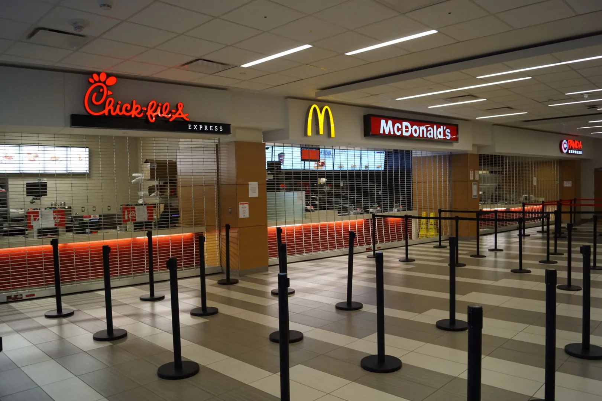

Welcome to The University of Houston's new Student Center.
The Student Center is designed as a vibrant hub for learning, collaboration, and community engagement, catering to students, faculty, and staff alike. Our state-of-the-art facility offers a variety of resources and services to support academic success and personal growth.
What We Offer:
Study Spaces: Quiet study rooms, collaborative workstations, and comfortable lounges provide the perfect environment for individual study or group projects.
Workshops and Events: Regular workshops on academic skills, career development, and personal wellness encourage continuous learning and professional growth. Join our events to connect with peers and faculty in a lively atmosphere.

Resource Center: Access academic advising, tutoring services, and mental health support all in one place. Our friendly staff is dedicated to helping students navigate their academic journeys.
Café and Dining Options: Recharge with delicious meals and snacks at our café, featuring a variety of dietary options to accommodate every taste.
Enternainment Spaces: The Student Center offers a vibrant range of entertainment options, including a state-of-the-art game room, weekly movie screenings, live performances, and recreational activities like bowling and billiards, providing a perfect space for students to relax, socialize, and unwind."
By fostering a sense of community and collaboration, the Student Center enhances the overall student experience, empowering individuals to thrive both academically and personally. Whether you’re seeking support, resources, or simply a place to connect with others, the Student Center is here to serve you. Join us in creating a vibrant campus community where everyone can grow and succeed!